<<< 返回［配置详解］索引
< 用SSH客户端软件登录到服务器 > （最近更新日：2006/0/0）
当服务器的SSH服务正常运行后，我们完全可以从此在我们的自用PC上用SSH客户端软件在局域网中登录到服务器，用这种方式完成服务器以后的配置和维护。不严格的说，这时服务器是不需要显示器和键盘的，因为绝大多数的配置工作都可在远端（局域网内）的客户端上操控。
这里，以简单易用的SSH客户端软件之一 -- PuTTY 为例，介绍从自用PC上登录到服务器的方法。
在
用OpenSSH构建SSH服务器 一节中，我们将服务器端相应用户的的私钥用安全的方式--3.5寸磁盘为介质，移动到了远程终端（自用PC等等）上，下面就介绍一下载远程终端用SSH客户端软件登录到服务器的方法。
SSH客户端软件，我们准备是用简单易用的PuTTY。但服务器端直接生成的私钥，PuTTY无法直接使用，需要用PuTTYGen来转换为PuTTY可以使用的私钥匙。
[1] 下在私钥转换工具
PuTTYGen 。 并且将要转换的私钥从软盘上复制到远程终端本地硬盘的适当位置上。
[2] 运行 PuTTYGen ，出现如下窗口：
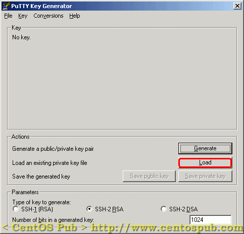
[3] 点击Load，选取服务器端生成的私钥（文件类型要选择“All Files”）。如下
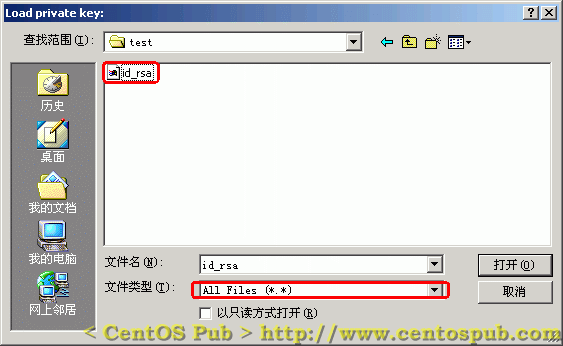
[4] 开始转换私钥，这里需要输入在服务器端建立此私钥时的口令。在文本框中输入口令开始转换，如下：
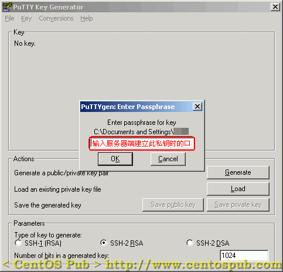
[5] 如果转换成功后，会弹出转换成功的提示窗口，点击确定进入下一步。如下：
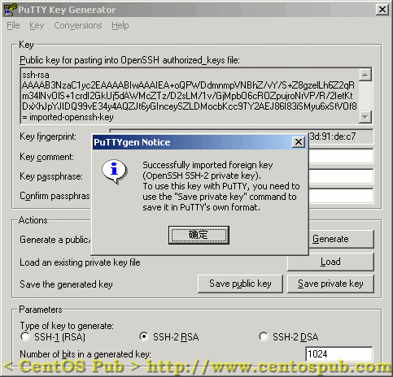
[6] 保存转换后的私钥匙到适当的位置（转换后的私钥将做为PuTTY登录到服务器时使用的私钥）。点击“Save private key”，并选择适当的位置保存私钥。如下：
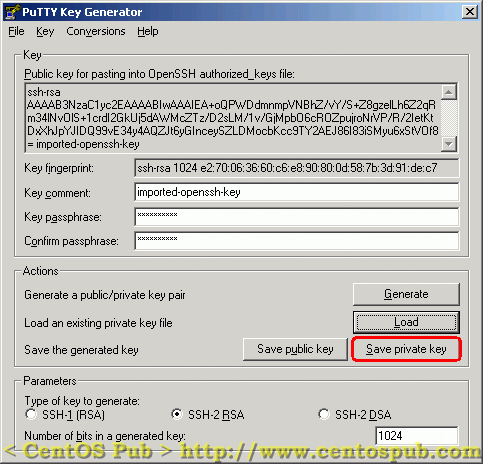
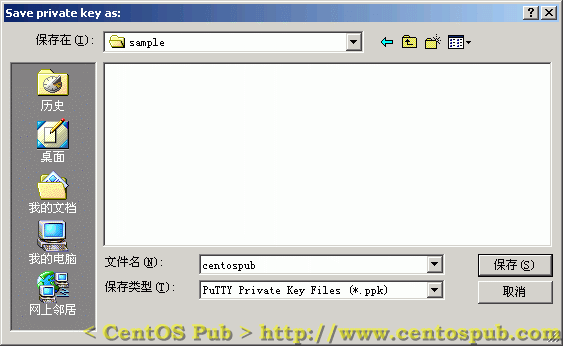
最后，关闭PuTTYGen，下面我们开始用PuTTY远程登录服务器。
| 在Windows下用PuTTY通过SSH协议登录到服务器 |
|
[1] 下载
PuTTY ，放在适当的目录（文件夹）中。（PuTTY为一个可执行文件，双击即运行）
[2] 双击启动 PuTTY ，在左侧找到Auth（认证方式）一项，对连接是使用的私钥进行设定，如下：
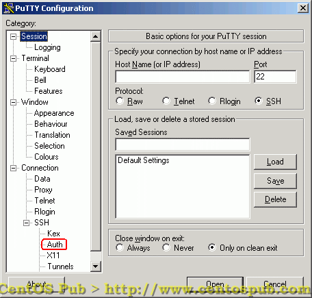
[3] 点击Browse，选择刚刚用PuTTYGen转换后的私钥。如下：
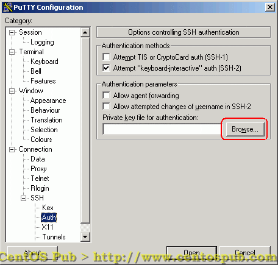
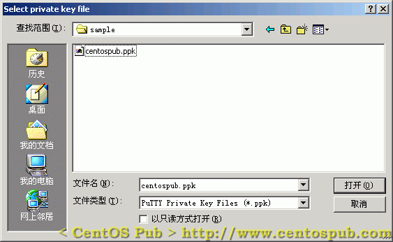
然后点击左侧的Session，回到主机连接信息的设置，如下：
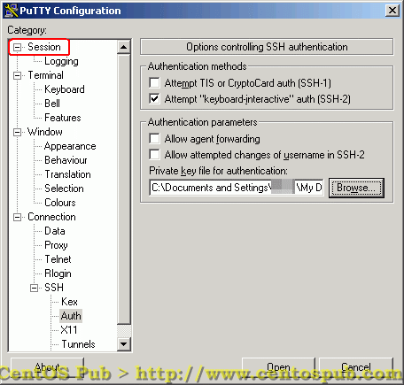
[4] 配置主机名，在“Host Name”填入服务器的IP地址，以及在“Saved Sessions”栏上填入此连接的名称（任意），然后点击Save，保存主机连接设置。如下：
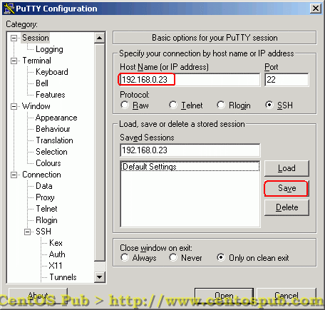
[5] 保存后，“Saved Sessions”一栏中会显示刚刚被加入的连接。双击此连接，开始进行连接，如下
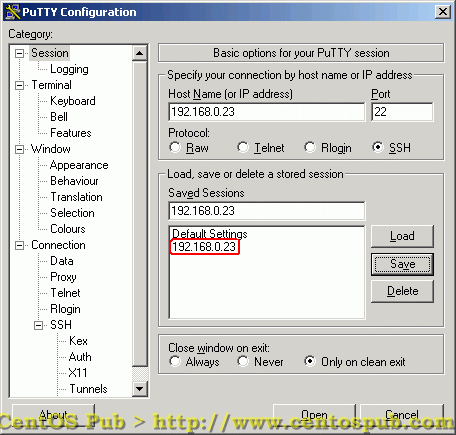
[6] 然后在登录窗口中输入服务器端，相应用户的用户名，如下：
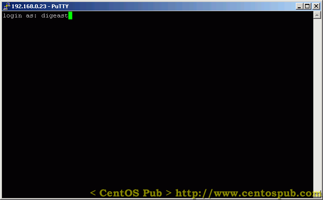
[7] 在输入完用户名后，不会出现用户密码输入提示框，因为在SSH服务器配置中我们禁止了用户通过用户密码方式的SSH登录。这时候会出现要求输入口令的提 示，这个口令就是在服务器端建立相应用户（digeast）的私钥的时候设置的口令。输入口令，进行登录。如下：
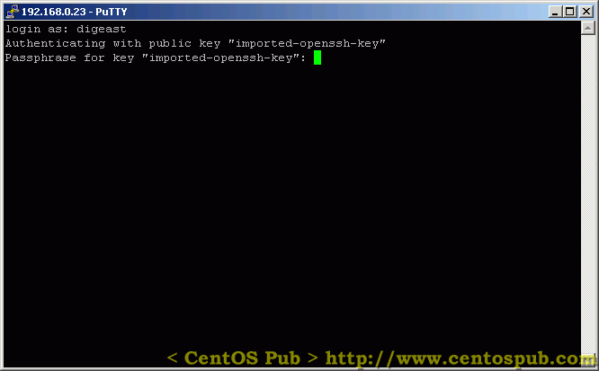
[8] 输入口令后，即可登录成功，如下：
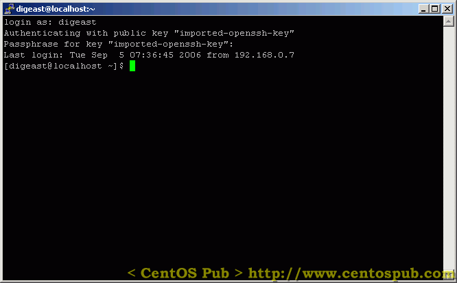
以上，就通过“钥匙”的方式成功的登录到了服务器。
另外由于在SSH服务器设定时禁止了root直接从远程登录，所以用SSH客户端是无法用通过root登录的，再者，要允许某个用户对服务器进行登 录，必须基于某个用户建立其相应的公钥与私钥--因为我们禁止用户通过用户密码的认证方式来登录SSH服务器，这样就大大增强了服务器的安全性。
但作为管理员，您可以将一般用户加入到wheel组中（方法见 CentOS的下载、安装及初始环境设置 ），然后基于此一般用户建立相应私钥于公钥，通过此用户远程登录到，然后再通过“su -”命令，获得root权限，对系统进行配置。而且，在初始环境设置中，我们不允许wheel组外用户“su -”登录为root用户，从而又进一步增强了系统的安全性。
从此，我们就可以通过在Windows下用PuTTY登录到服务器的方式来完成所有服务器的配置工作。当然如果您喜欢，或出于其他原因，也同样可以在 服务器本机上完成所有的配置工作。二者无本质的区别，这也体现了UNIX操作系统多用户、多任务处理的特性之一。